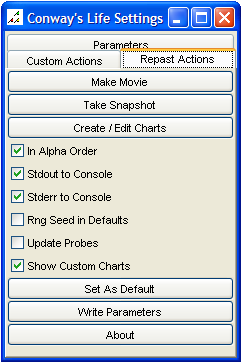

How to use the GUI
A user can interact with a non-batch Repast simulation
through the gui. The gui allows the user to start, stop, pause, setup, and exit
a simulation through the toolbar. The table below lists the toolbar buttons and
their functions.
| Start Multi-Run |
Start |
Step |
Initialize |
Stop |
Pause |
Setup |
Load Model |
View Settings |
Exit |
|
 |
 |
 |
 |
 |
 |
 |
 |
 |
- Start
Multi-Run: The start multi-run button starts a batch run of a
simulation. See How to Use the Multi-Run for more details.
- Start: The start button
starts the simulation when it is paused or has not yet been started, iterating
through the scheduled behavior.
- Step: The step button
starts the simulation when it is paused or has not yet been started, iterating
through a single iteration the scheduled behavior.
- Initialize: The
initialize button starts the simulation but pauses before iterating any
scheduled behavior. Only the initializing code is executed in this case.
- Stop: The stop button
stops the simulation.
- Pause: The pause button
pauses the simulation.
- Setup: The setup button
"sets up" the simulation by executing the user defined setup code.
- Load Model: The load
model button pops up a dialog allowing the user to specify a model to load.
- View Settings: The view
settings button will display the various model settings panel if it is hidden
or destroyed.
- Exit: The exit button
will shutdown the simulation and exit.
To run a simulation you would
click either the start, step or initialize buttons. If you click the initialize
button, you would then click step or start. When you want to stop the simulation
and then run it again, you click stop and then the setup button.
In addition, if the model has followed the get/set
method pattern (see How to Build a
Model and How to use Parameters and Parameter Files) the user
will also be able to see and set the initial parameters of a simulation. The
initial parameters will appear in the settings window on the tab entitled
"Parameters" into which the user can see the default starting parameters and
enter new ones.
Also in the settings window are the Custom Actions tab
and the Repast Actions tab. The Custom Actions tab will contain any sliders,
buttons, or checkboxes that the simulation author has defined. You can interact
with the model while it is running through these sliders, buttons, and
checkboxes.
The Repast Actions tab looks like:

- The first two buttons allow you to make a movie or
take a snapshot. Clicking on one of these buttons will bring up a dialog
containing further information and choices.
- The third button will bring up a dialog for creating
an sequence chart. (This functionality is provisional at this time.)
- The "In Alpha Order" check box controls the order of
the parameters in the parameters tab. If it is checked the parameters will
appear in alphabetical order. Otherwise they will appear in the order they are
defined in the model.
- The "Stdout to Console" check box determines if standard output (output
from "System.out.println") will be captured by the Repast console.
- The "Stderr to Console" check box determines if standard error (output
from "System.err.println") will be captured by the Repast console.
- The "RngSeed in Defaults" checkbox determines
whether the current random number seed will be included as a default value
either when written to a file or set as the current default.
- "Update Probes" determines whether or not any probed
objects have their displayed properties updated in real-time or not.
- "Show custom charts" determines whether or not any
custom charts created for this model using the "create / edit charts" button
are automatically created and displayed when this model is run.
- The "Set As Default" button will set the current
parameters as the default until Repast is exited. This
means that whenever the setup button is pressed these new
defaults will be used rather the initial parameters.
- The "Write Parameters" button will write the current parameters
to a file so that can be loaded later.
- The "About" button displays a typical about dialog
giving some further information about Repast.
A user may also probe objects in the simulation provided those objects
implement the get/set method pattern and whose displays are added to
the DisplaySurface as probeables (see How to
Create Displays). To probe an object, pause the simulation, and
left click on the object in the display. The probeable state of all
the objects underneath the cursor should appear in windows similar to
the "Parameters" tab in the settings window, and their properties can
be set in the same way (i.e. changing the property and pressing
enter).
Displaying a simulation can be one of the slowest parts
of a simulation. Repast will not update the display if the display window is
minimized, allowing for dynamic display updates. (Of course, these kind of
updates can be set explicitly through a Schedule.) When the window is displayed
again it will update in the usual manner.